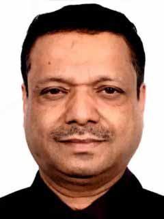

Secretary's Message
Sometimes, seeing our children in a fresh, new way is the first step to changing old and ineffective ways of relating to them. Personality type is a powerful and respected method of identifying and understanding a person’s true, inherent nature. Personality type gives us a powerful and enlightening way of altering the way we handle our children and make us more positive.
Families send children to school, where they hope their children will become learners with the tools they need to succeed in life. Schools take children from and send them back to their families, where they assume the families will provide the support that children need to grow and learn. This circle in which the home and school share the resource of children is the prime concern at Shri Ram Public School, where the aim is to optimize the development of students through a synergistic collaboration between the families and the school.
Both parents and educators have a large stake in children’s success and the linkages promoted to facilitate it. No one would dispute that. But conceptualizing and operationalizing the connections between home and school may be done in many ways depending on the ground realities and specific ideas about the rights, roles, and responsibilities of participants in education. Caution needs to be exercised while conceptualizing these connections as they have implications not only on activities undertaken but also on the way the scholars choose to think about parents and educational places. At Shri Ram Public School we therefore try to think beyond the underlying dimensions of power and ideology in the interactions between parents and educators so that the home school relationship is strengthened and student potential is harnessed completely.
Parents are involved in all school activities. PTM’s are organized at regular intervals to help in bridging the gap between families and the school management. A core group at the school is constantly working upon strategies which enhance collaborative functioning between school and parents with end goal of holistic education for the children. Suggestions made by parents, received at the PTM’s, are put up to this core group which then determines implementation strategies.
Respect for one’s culture and the development of the right values are given the same importance at Shri Ram Public School as academic activities that promote learning.
Mr. Rakesh Kr. Rastogi (Secretary)